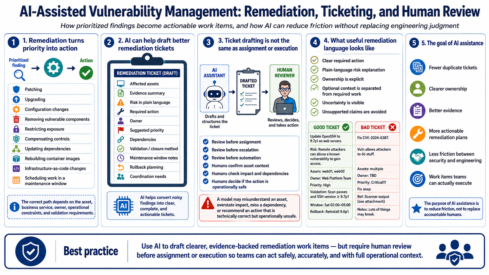

Remediation Planning and Ticket Drafting
Connecting to LMS... Progress: in progress

Narration
Remediation turns prioritized findings into action. Common responses include patching, upgrading, changing configuration, removing vulnerable components, restricting exposure, applying compensating controls, updating dependencies, rebuilding container images, changing infrastructure-as-code, or scheduling work during a maintenance window. The correct path depends on the asset, business service, owner, operational constraints, and validation requirements.
AI can help convert noisy findings into useful tickets. A good ticket names the affected assets, summarizes the evidence, explains the risk in plain language, states the required action, identifies the owner, suggests priority, notes dependencies, and describes how closure will be validated. It should also mention maintenance windows, rollback planning, and coordination needs when those factors are relevant.
Ticket drafting is not the same as ticket assignment or execution. AI-generated tickets must be reviewed before they are assigned, escalated, or used to trigger automation. A model may misunderstand an asset, overstate impact, miss a dependency, or suggest an action that is technically correct but operationally unsafe. Human review protects engineering teams from vague or misleading work items.
Useful remediation language helps teams fix the problem without burying them in scanner jargon. It should distinguish required action from optional context. It should avoid unsupported claims and make uncertainty visible. The purpose of AI assistance is to reduce friction: fewer duplicate tickets, clearer ownership, better evidence, and remediation plans that teams can actually execute.